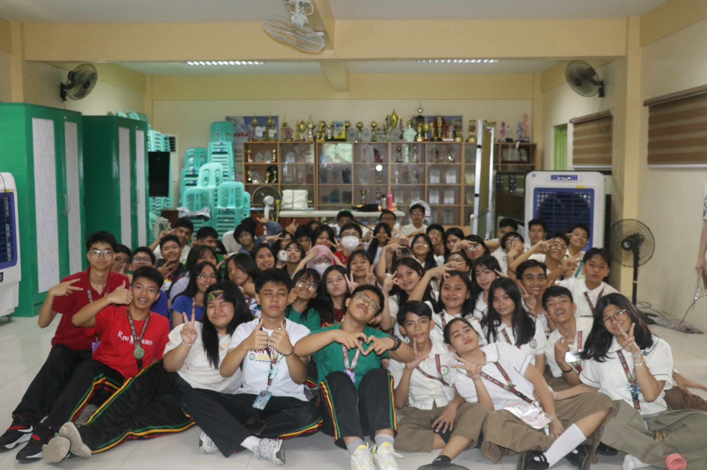
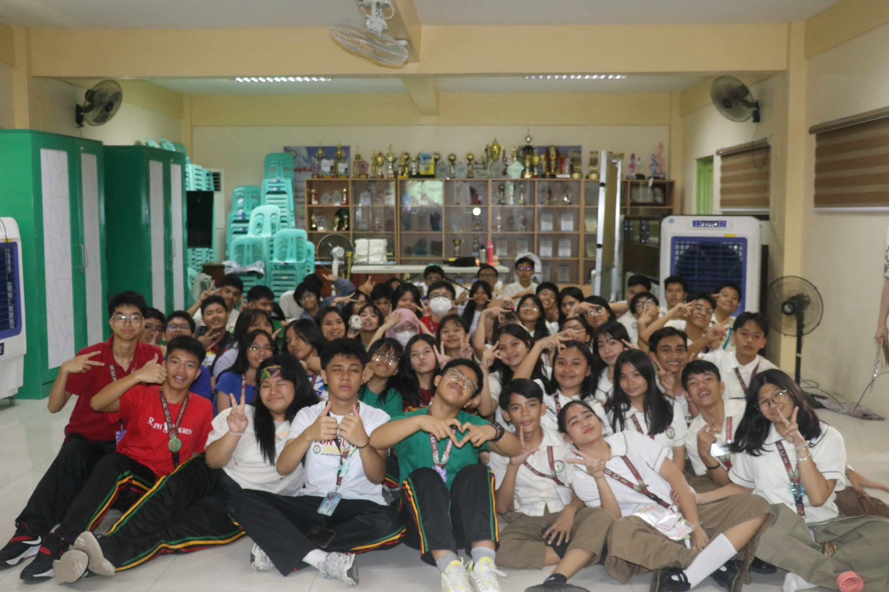

A WANDERER'S
JOURNEY
My Second Quarter E-Portfolio
ICT Lessons

School Events
 

Event 1: Buwan ng Wika
Q1: What is the most important thing I learned from the event?
A: I realized that our language is not just a way to speak, but a symbol of our identity and pride as Filipinos. It connects us to our history and unites us as a nation.
Q2: How can I apply what I learned in real-life situations?
A: I can use Filipino more often and encourage others to embrace it, showing pride in our culture even in modern settings.
Q3: Did I actively participate in the event? How?
A: Yes, I helped decorate our classroom with traditional Filipino symbols and joined the performance with my classmates.
Q4: If I were to teach this topic to a classmate, how would I explain it?
A: I’d say that Buwan ng Wika reminds us to appreciate the beauty of our own language and its role in shaping our identity.
Q5: Why is it important to have an event per subject?
A: It gives students a chance to experience learning in creative ways and develop appreciation for different aspects of education.
Event 2: Intramurals
Q1: What is the most important thing I learned from the event?
A: I learned that teamwork, determination, and respect are just as important as skill. Winning isn’t everything; effort and unity matter most.
Q2: How can I apply what I learned in real-life situations?
A: I can work better with others in class projects and maintain sportsmanship, even in challenging moments.
Q3: Did I actively participate in the event? How?
A: Yes, I joined the cheering group, helped organize our props, and encouraged my teammates throughout the games.
Q4: If I were to teach this topic to a classmate, how would I explain it?
A: I’d explain that Intramurals teach discipline, perseverance, and unity — lessons that go beyond the playing field.
Q5: Why is it important to have an event per subject?
A: It keeps students engaged and teaches valuable life skills that complement what we learn in class.


Event 3: Science Month
Q1: What is the most important thing I learned from the event?
A: I learned that science is everywhere — in nature, technology, and even in our daily routines. It helps us understand the world around us.
Q2: How can I apply what I learned in real-life situations?
A: I can be more curious and observant, ask questions, and use scientific thinking to solve problems logically.
Q3: Did I actively participate in the event? How?
A: Yes, I assisted my group with our science exhibit and shared ideas to make our project creative and informative.
Q4: If I were to teach this topic to a classmate, how would I explain it?
A: I’d tell them that Science Month is a celebration of discovery, innovation, and curiosity — things that make life more meaningful.
Q5: Why is it important to have an event per subject?
A: Because it allows us to explore subjects more deeply and relate them to real-life experiences in a fun way.
Event 4: Araling Panlipunan Month
Q1: What is the most important thing I learned from the event?
A: I learned that understanding our history helps us appreciate our culture and the struggles that shaped who we are today.
Q2: How can I apply what I learned in real-life situations?
A: I can be more aware of social issues, respect different beliefs, and contribute positively to my community.
Q3: Did I actively participate in the event? How?
A: Yes, as an AP club member, I helped set up the art exhibit. I also acted as a runner for the quizbee.
Q4: If I were to teach this topic to a classmate, how would I explain it?
A: I’d explain that Araling Panlipunan Month helps us value our roots and understand how history influences the present.
Q5: Why is it important to have an event per subject?
A: It inspires students to engage with learning beyond the classroom and feel connected to the world around them.


Event 5: Teacher’s Day
Q1: What is the most important thing I learned from the event?
A: I realized how much effort teachers put into helping us grow. They deserve our gratitude, not just on Teacher’s Day, but every day.
Q2: How can I apply what I learned in real-life situations?
A: I can show appreciation through small gestures like saying thank you or being attentive in class.
Q3: Did I actively participate in the event? How?
A: Yes, I helped prepare a short tribute presentation and wrote letters of appreciation for my teachers.
Q4: If I were to teach this topic to a classmate, how would I explain it?
A: I’d explain that Teacher’s Day reminds us of how teachers shape our future and why it’s important to value their hard work.
Q5: Why is it important to have an event per subject?
A: Because it reminds us that education is built through teamwork — between teachers and students.
Event 6: Cluster Meet
Q1: What is the most important thing I learned from the event?
A: I learned that competition is healthy when done with integrity and respect. It’s about improving yourself, not just winning.
Q2: How can I apply what I learned in real-life situations?
A: I can face challenges with confidence, give my best effort, and learn from both victory and failure.
Q3: Did I actively participate in the event? How?
A: Yes, I supported my school’s participants and helped in organizing materials for the event.
Q4: If I were to teach this topic to a classmate, how would I explain it?
A: I’d explain that Cluster Meet is about teamwork, growth, and building school pride while having fun.
Q5: Why is it important to have an event per subject?
A: It gives students a platform to showcase talents, build confidence, and connect their learning to real experiences.